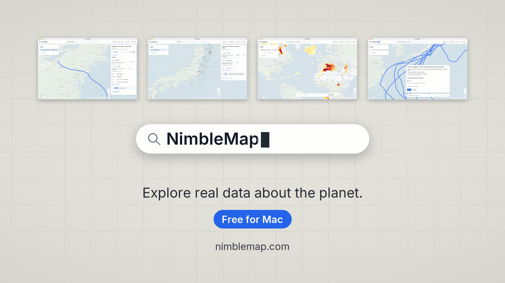

Terremotos en tiempo real
USGS Earthquake Hazards Program
Gratis para Mac y Windows
Shapefile, GeoPackage, NetCDF, GeoTIFF, GPX, KML, CSV con coordenadas: los archivos que descargas de la NASA, del USGS o del portal de datos abiertos de tu ciudad. NimbleMap los abre como mapa en segundos. Sin formación en SIG, sin configurar nada.
Arrastra el archivo a NimbleMap, o haz doble clic en un Shapefile, GeoPackage o NetCDF para abrirlo directamente.
Disponible para Mac (Apple silicon, macOS 13+) y Windows 10/11 (x64).
Mac: Gratis · unos 109 MB · macOS 13 o posterior · Apple silicon · funciona sin conexión
La primera vez, macOS te pide que la autorices: cómo abrirla

datos de mapas
IBTrACS_storm_tracks_1980-2026.shp: 4999 trayectorias de tormentas, coloreadas por viento máximo

NimbleMap en 78 segundos: arrastra un archivo, explóralo y hazle una pregunta.
Datos gratuitos
Conjuntos de datos públicos elegidos a mano, desde terremotos en tiempo real hasta calzadas romanas. La mayoría se descarga con un clic.
Qué abre
Arrastra un archivo a NimbleMap y cae en su sitio, en la proyección correcta, listo para explorar.
.shp
Límites, carreteras, trayectorias de tormentas. Deja los archivos .dbf, .shx y .prj a su lado.
.zip
Ábrelo tal cual, sin descomprimir.
.gpkg
Un solo archivo ordenado que puede guardar muchas capas.
.geojson.json
El formato de mapas de la web, de portales de datos abiertos y API.
.csv.tsv.xlsx
CSV, TSV o Excel con columnas de latitud y longitud.
.kml.kmz
Marcadores, rutas y áreas de Google Earth.
.gpx
Carreras, salidas en bici y excursiones desde tu reloj o tu teléfono.
.tif.tiff
Elevación, cobertura del suelo, imágenes de satélite y de dron.
.nc
Cuadrículas de clima y meteorología, que se reproducen con una barra de tiempo.
El doble clic abre en NimbleMap los Shapefile, GeoPackage y NetCDF. Los demás archivos se abren con otras aplicaciones al hacer doble clic, así que arrástralos a NimbleMap, o usa clic derecho › Abrir con › NimbleMap.
Una vez abierto

Desplázate, pellizca y arrastra, desde todo el planeta hasta una sola costa.

Escribe una ciudad para volar hasta ella, o un nombre para encontrarlo en tu archivo: aquí, todas las tormentas llamadas Haiyan.

Mira qué es y cómo se compara. El terremoto de Tohoku de 2011 fue más fuerte que el 99 % de 14 537.

Los archivos con pasos de tiempo tienen una barra de tiempo. Pulsa Play (Reproducir) y mira cómo se mueve un verano de olas de calor.
Cada número sale de todos tus datos, no solo de lo que se ve en pantalla, y cada paso se puede deshacer.
NimbleMap Pro: pregunta a tus datos con palabras normales. Se desbloquea al iniciar sesión dentro de la app, gratis con una cuenta.
Qué añade Pro →Práctica
No hace falta descargar nada: vienen con la aplicación.

4999 trayectorias de tormentas desde 1980. Los vientos de 170 nudos de Haiyan superan los del 99 % de 4547 tormentas.
Pruébalo paso a paso → IBTrACS v04r01
1789 murallas de ciudades. La de Pekín encerraba 35.3 km², más que el 99 % de ellas.
Pruébalo paso a paso → Xue et al. 2021 · CC BY 4.0
Pulsa Play (Reproducir) y mira cómo el calor se desplaza por el mundo.
Pruébalo paso a paso → Copernicus GDO / JRC · CC BY 4.0También incluye: terremotos desde 1900, volcanes, aeropuertos, centrales eléctricas, y ciudades, países y elevación del mundo.
Compartir
Añade título, leyenda y créditos. Exporta para una diapositiva, un informe o una publicación.

Disponible para Mac (Apple silicon, macOS 13+) y Windows 10/11 (x64).
Mac: Gratis · unos 109 MB · macOS 13 o posterior · Apple silicon · funciona sin conexión
La primera vez, macOS te pide que la autorices: cómo abrirla
NimbleMap está basada en RustGIS.